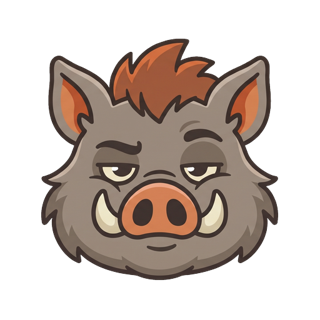
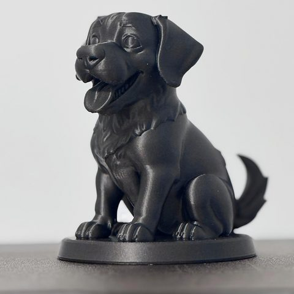
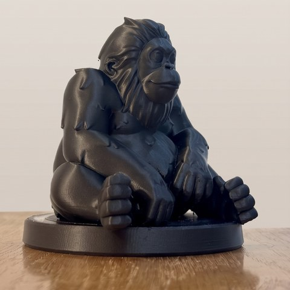

GRUMPY TUSK
Grumpy little critters for your 3D printer
🐗 I'm not cute. I'm grumpy.
Latest critters

Buddy
Way too happy. Tusk hates him.
Out now
Out now

Mango
Nothing surprises him.
Free STL soon
Free STL soon